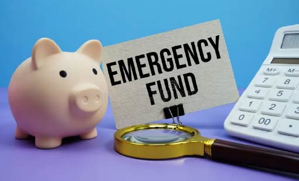

Fondo de Emergencia
Arquitectura, Liquidez y Meses de Supervivencia
¿Te has preguntado alguna vez cuánto tiempo podrías cubrir tus gastos si perdieras tu fuente de ingresos de repente? La incertidumbre económica es una realidad que todos enfrentamos en algún momento de nuestras vidas. Un fondo de emergencia bien estructurado y una gestión de liquidez eficiente son tus mejores aliados para afrontar imprevistos con serenidad y proteger tu estabilidad financiera. En este artículo, te guiaremos paso a paso para construir un fondo de emergencia sólido, calcular tus meses de supervivencia y elegir los instrumentos financieros más adecuados para mantener tu capital seguro y disponible.
¿Qué es un Fondo de Emergencia?
Un fondo de emergencia es una reserva de dinero específicamente destinada a cubrir gastos inesperados y situaciones imprevistas.
A diferencia de los ahorros que destinamos a metas a largo plazo, como la compra de una vivienda o la jubilación, el fondo de emergencia tiene un propósito muy claro: brindarte seguridad financiera en momentos de crisis. No es para invertir en oportunidades arriesgadas, sino para protegerte de los golpes económicos que puedan surgir.

Arquitectura de un Fondo de Emergencia:
La construcción de un fondo de emergencia sólido requiere planificación y disciplina. Aquí te presentamos los pasos clave para diseñar la arquitectura de tu propio fondo:
Cálculo de Gastos Fijos Mensuales
El primer paso es identificar y sumar todos tus gastos fijos mensuales. Estos son los gastos que debes cubrir sí o sí, independientemente de tu situación laboral o personal. Incluyen:
- Alquiler o hipoteca
- Servicios básicos (agua, luz, gas, internet, teléfono)
- Alimentación
- Transporte (combustible, transporte público, cuotas de coche)
- Seguros (salud, coche, hogar)
- Deudas (tarjetas de crédito, préstamos)
- Educación (colegios, universidades)
Para calcularlos con precisión, puedes revisar tus extractos bancarios de los últimos meses, utilizar una aplicación de presupuesto o crear una hoja de cálculo detallada.


Determinacion de meses de supervivencia
La cantidad ideal para tu fondo de emergencia dependerá de tu situación personal y tu tolerancia al riesgo. Como regla general, intenta cubrir entre 3 y 6 meses de gastos fijos. Si eres trabajador independiente, tienes ingresos variables o dependes de una sola fuente de ingresos, considera ampliarlo a 6-12 meses.
Para calcularlo, simplemente multiplica tus gastos fijos mensuales por el número de meses que deseas cubrir
- Fondo de Emergencia = Gastos Fijos Mensuales x Meses de Supervivencia

- Cuentas de Ahorro de Alta Liquidez: Ofrecen acceso inmediato a tus fondos y suelen estar aseguradas por el gobierno hasta cierto límite.
- Depósitos a Corto Plazo con Disponibilidad Inmediata: Similar a las cuentas de ahorro, pero pueden ofrecer tasas de interés ligeramente más altas.
- Fondos de Inversión de Bajo Riesgo y Alta Liquidez (Fondos Monetarios): Invierten en instrumentos de deuda a corto plazo y ofrecen un rendimiento modesto con bajo riesgo.
Instrumentos de Liquidez y Protección
Elige instrumentos financieros que te permitan acceder a tu dinero de forma rápida, segura y sin riesgo de pérdida. Las opciones más comunes son:
Es fundamental evitar invertir tu fondo de emergencia en activos de riesgo, como acciones, criptomonedas o bienes raíces, ya que podrías perder parte de tu capital en caso de una caída del mercado.

- Revisión Periódica: Revisa tu fondo de emergencia al menos una vez al año para asegurarte de que sigue siendo suficiente para cubrir tus gastos fijos. Si tus gastos aumentan debido a la inflación, cambios en tu estilo de vida o nuevas responsabilidades, ajusta la cantidad en consecuencia.
- Reposición Después de un Uso: Si utilizas parte de tu fondo de emergencia para cubrir un gasto inesperado, establece un plan para reponerlo lo antes posible. Puedes automatizar las transferencias desde tu cuenta corriente a tu fondo de emergencia para que el proceso sea más fácil y consistente.
Gestión Continua del Fondo de Emergencia
Un fondo de emergencia no es algo que se crea una sola vez y se olvida. Requiere una gestión continua para asegurar que siga siendo adecuado para tus necesidades y circunstancias.
Conclusion
Un fondo de emergencia bien estructurado es una herramienta esencial para proteger tu estabilidad financiera, afrontar imprevistos con tranquilidad y evitar endeudarte innecesariamente. No esperes más. Calcula tus gastos fijos, determina tus meses de supervivencia y comienza a construir tu fondo de emergencia hoy mismo. Tu futuro financiero te lo agradecerá.
Curso de Finanzas Personales – TecNM (Zentra tus Finanzas I)
- Plataforma: MOOC TecNM
- Duración: 4 semanas (32 horas)
- Costo: Gratis
- Certificado: Sí, al aprobar con mínimo 70/100
- Temas clave: Presupuesto, ahorro, inversión, crédito, fraudes financieros y equilibrio financiero.